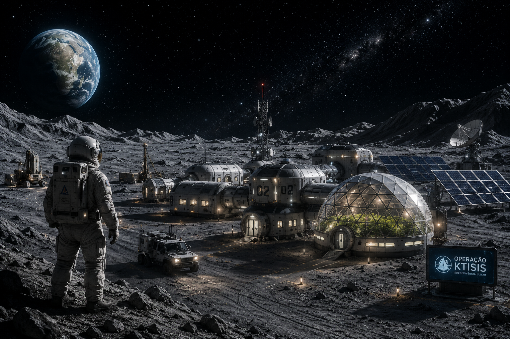

Guia da missão
10
semanas para sobreviver
04
recursos vitais
04
módulos estratégicos
Como Jogar
A cada semana, o jogador responde desafios técnicos, recebe recursos operacionais e decide como melhorar a base lunar antes do consumo semanal ser aplicado.

Ciclo de jogo
Cada semana combina três perguntas, ganho de recursos operacionais, construção ou melhoria de módulos e fechamento do consumo da base.
Responder Quiz
Responda 3 perguntas por semana sobre energia, biologia, mineração e geologia lunar.
Receber Recursos
As respostas geram Minerais, Componentes ou Biomassa. Acertos rendem mais recursos, mas erros ainda dão uma quantia menor.
Planejar Construção
Use os recursos recebidos para escolher um módulo, fazer upgrade ou guardar materiais para a próxima semana.
Fechar Semana
A base calcula produção dos módulos, consumo semanal e verifica se energia, água, oxigênio e alimentos continuam acima de zero.
Recursos Vitais para Sobrevivência
O equilíbrio entre produção e consumo é a chave para chegar à décima semana.
Energia
Mantém sistemas, iluminação e módulos ativos.
Água
Sustenta a tripulação e os sistemas de suporte à vida.
Oxigênio
Garante a habitabilidade da base lunar.
Alimentos
Mantém a equipe abastecida durante a missão.
Módulos Estratégicos
Os módulos usam recursos operacionais para aumentar a produção da base. Alguns também consomem energia ou água a cada semana.
Painel Solar
Aumenta a produção semanal de energia da base.
Reciclador de Água
Produz água para a base e consome energia para operar.
Gerador de Oxigênio
Produz oxigênio para a colônia e consome energia da base.
Estufa Hidropônica
Produz alimentos por cultivo controlado, mas depende de água e energia.